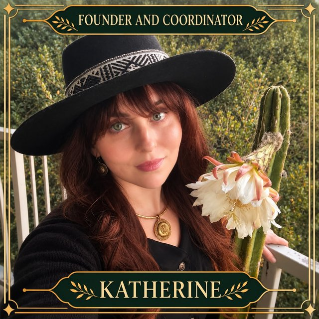

Katherine Tomlinson (she/they)
Founder & Coordinator · Marin hikes · Medicine Music Study Group
Katherine Tomlinson is the founder and coordinator of the Integral Psychedelic Community, where she co-leads the community’s Marin hikes and Medicine Music Study Group, creating spaces for people to connect with nature, music, and one another. Currently she lives in unceded Coastal Miwok territory, also known as Sausalito, CA.
Katherine has been involved in psychedelic education, advocacy, and community organizing since 2007. She holds a liberal arts degree from The Evergreen State College, where she was able to focus her study on psychedelics and plant teachers, space holding for expanded states of consciousness, and community building. Currently, she is working towards a masters degree from the California Institute of Integral Studies, works as ceremonialist in one-on-one containers, organizes educational events, contributes to conferences, and has supported the development of spaces for learning, dialogue, and community building with psychedelics and plant teachers for over half of her life.
Her current studies focus on the traditional Andean teacher plant Wachuma (San Pedro), with a particular interest in its archaeological history, cultural significance, and relationship to Andean cosmology. Through ongoing study, travel, and relationships with traditional knowledge keepers in Peru, she seeks to deepen her understanding of the cactus and the cultures that have maintained relationships with it for thousands of years.
Katherine’s approach emphasizes cultural respect, reciprocity, lifelong learning, harm reduction, and the importance of building meaningful relationships between people, communities, and the natural world. She can be reached via email, or on Instagram at @integralwithkatherine.